01. แผนที่ฐาน กทม. (Baseline): จุดรถติดสะสม & ผลกระทบฝนตก
💡 Key Insight: กทม. ชั้นใน (21.6%) ติดหนักกว่าชั้นนอก (13.2%) ถึง +63.1% และ 84.8% ของถนนทั้ง 4,068 ช่วงแย่ลงเมื่อฝนตก (ค่ากลาง +4.55 pp, p90 สูงถึง +13.09 pp)
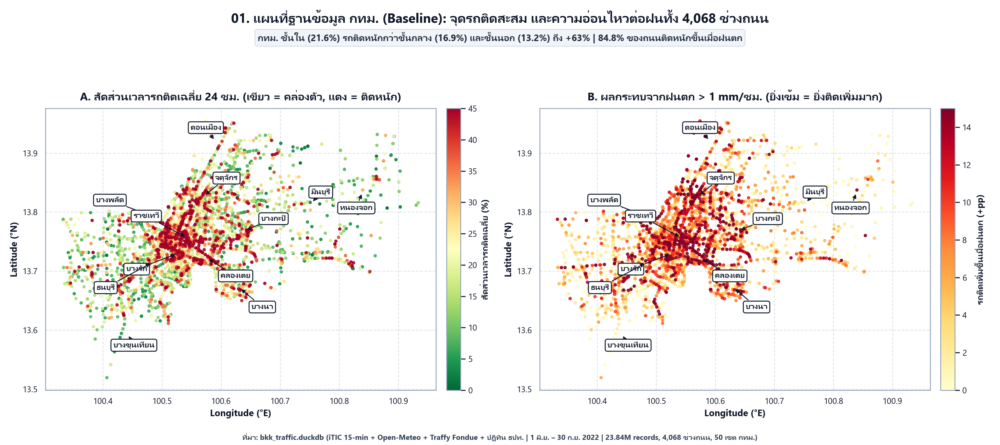
02. แผนที่ชั่วโมงเร่งด่วนวันทำงาน: เช้า vs เย็น
💡 Key Insight: ช่วงเย็น 17:00–19:00 น. (40.9%) รถติดแผ่วงกว้างกว่าช่วงเช้า (34.2%) ถึง +6.6 pp โดยเฉพาะแนวสุขุมวิท–รัชดา–พหลโยธิน–ลาดพร้าว
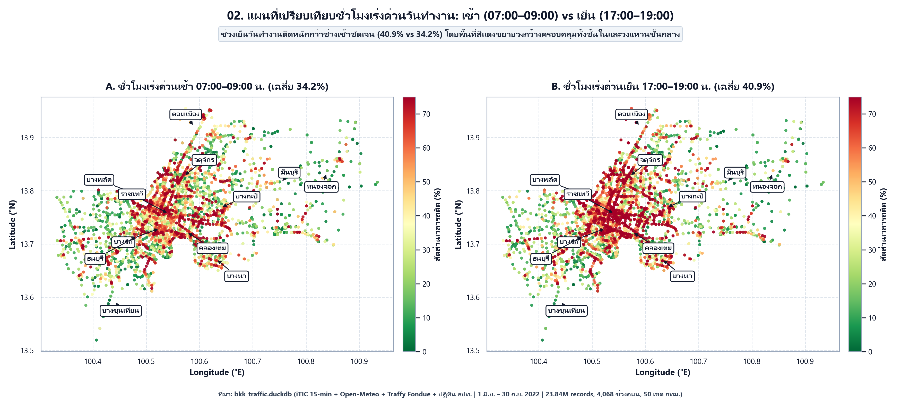
03. จังหวะเวลารถติดรายชั่วโมง & ละเอียดทุก 15 นาที
💡 Key Insight: เมื่อแยกวันหยุดนักขัตฤกษ์ออก เห็นชัดเจนว่า 'ศุกร์ 18:00 น.' (47.1%) คือช่วงที่รถติดหนักที่สุดในสัปดาห์ และพีคสุดที่ 17:45 น. (49.0%)
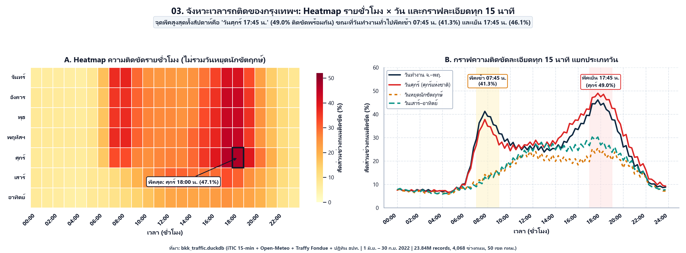
04. ทิศทางรถติดวันทำงาน: ขาเข้า vs ขาออกเมือง
💡 Key Insight: ความไม่สมมาตรระหว่างทิศทางสูงถึง 5–6 pp ในชั่วโมงเร่งด่วน ทำให้ตัวแปรทิศทาง (inbound/outbound) มีความสำคัญต่อการวางแผนเส้นทาง
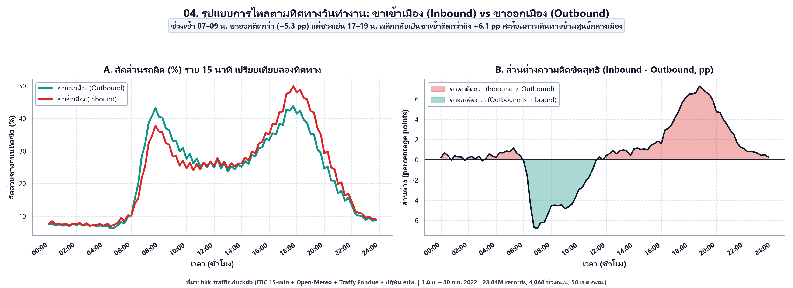
05. แนวโน้มรายวัน 122 วัน: รถติด vs ฝน vs น้ำท่วม Traffy
💡 Key Insight: หลังแก้บั๊กสล็อตเซ็นเซอร์ล่ม (itic_active_segments = 0) วันน้ำท่วมสูงสุด 21 ก.ค. (1,333 เรื่อง, พายุถล่มตอนดึก) รถติดพุ่งขึ้นมาที่ 22.2% และสูงสุดของปีคือ 8 ก.ย. (25.5%)
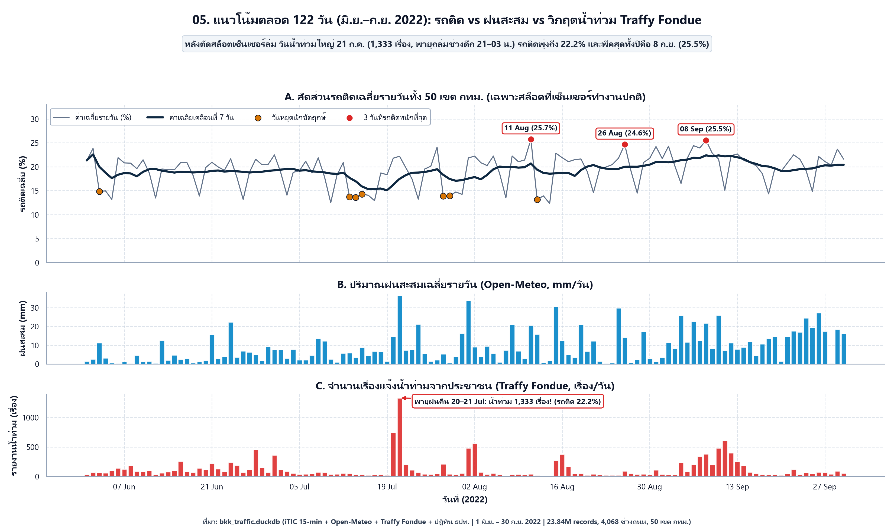
06. อันดับเขตและจุดคอขวดวิกฤตของกรุงเทพฯ
💡 Key Insight: กทม. ชั้นในติดหนักกว่าชั้นนอกถึง 3.7 เท่า (คลองเตย 31.3% vs หนองจอก 8.5%) โดยมีจุดคอขวดอันดับ 1 คือ ถนนรางน้ำ (80.9%) และทางพิเศษศรีรัช ด่านประชาชื่น (80.2%)
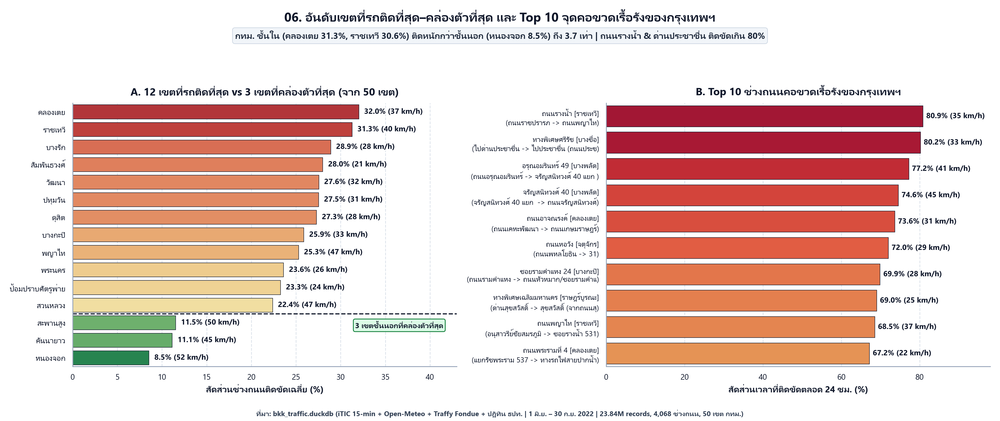
07. ห่วงโซ่ผลกระทบ: ความแรงฝน -> เขตเสี่ยงน้ำท่วม -> น้ำท่วมขังสด Traffy
💡 Key Insight: เมื่อแยกชั่วโมงเร่งด่วนกับนอกเร่งด่วน ยิ่งฝนตกแรงรถยิ่งติดเพิ่มขึ้นแบบทางเดียว (พีค 39.2% ที่ฝน 10–20 mm/ชม.) และเมื่อเกิดน้ำท่วมขังจนมีแจ้ง Traffy >=2 เรื่อง/15น. รถติดพุ่งถึง 33.7%
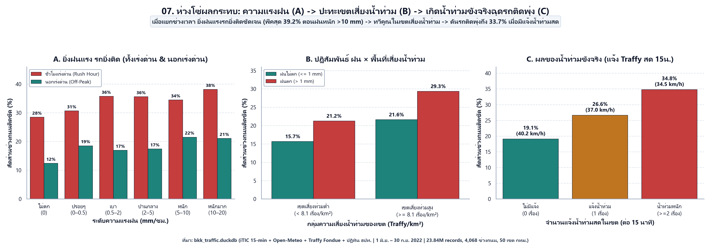
เขตเสี่ยงน้ำท่วม -> น้ำท่วมขังสด Traffy" loading="lazy" />08. อิทธิพลศุกร์สัปดาห์เงินเดือนออก วันหยุด และสหสัมพันธ์ 10 ปัจจัยหลัก
💡 Key Insight: เย็นวันศุกร์ในสัปดาห์ที่เงินเดือนออกพุ่งสูงสุดถึง 44.8% ตามด้วยวันทำงานสิ้นเดือน (41.8%) และศุกร์ทั่วไป (41.0%) สูงกว่าเย็นวันทำงานปกติ (37.4%) ชัดเจน
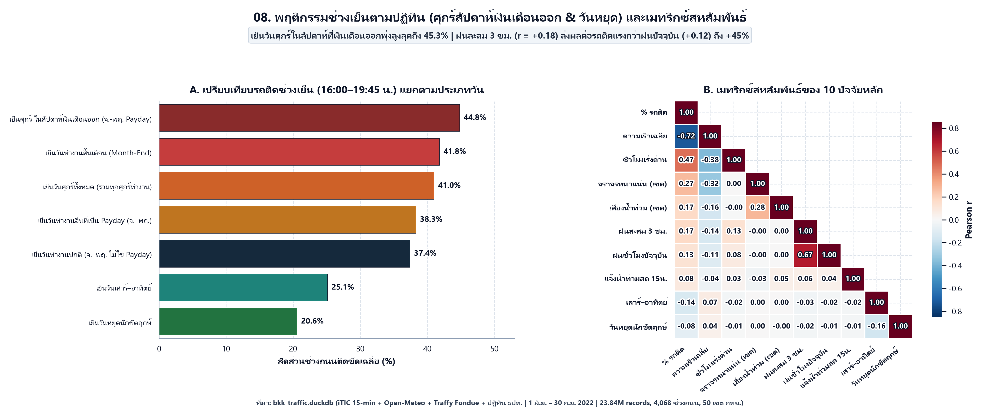
09. การกระจายตัวของแต่ละฟีเจอร์ (12 Features) & การทำ Log Transform
💡 Key Insight: การแปลง log(1+x) ช่วยลดความเบ้ขวา (Skewness) ของตัวแปรพื้นที่ ถนน น้ำท่วม และฝนสะสมลงอย่างชัดเจน เช่น area_sq_km (+3.24 -> +0.31), flood_per_sq_km (+1.00 -> -0.20), precip_6h (+2.04 -> +0.52)
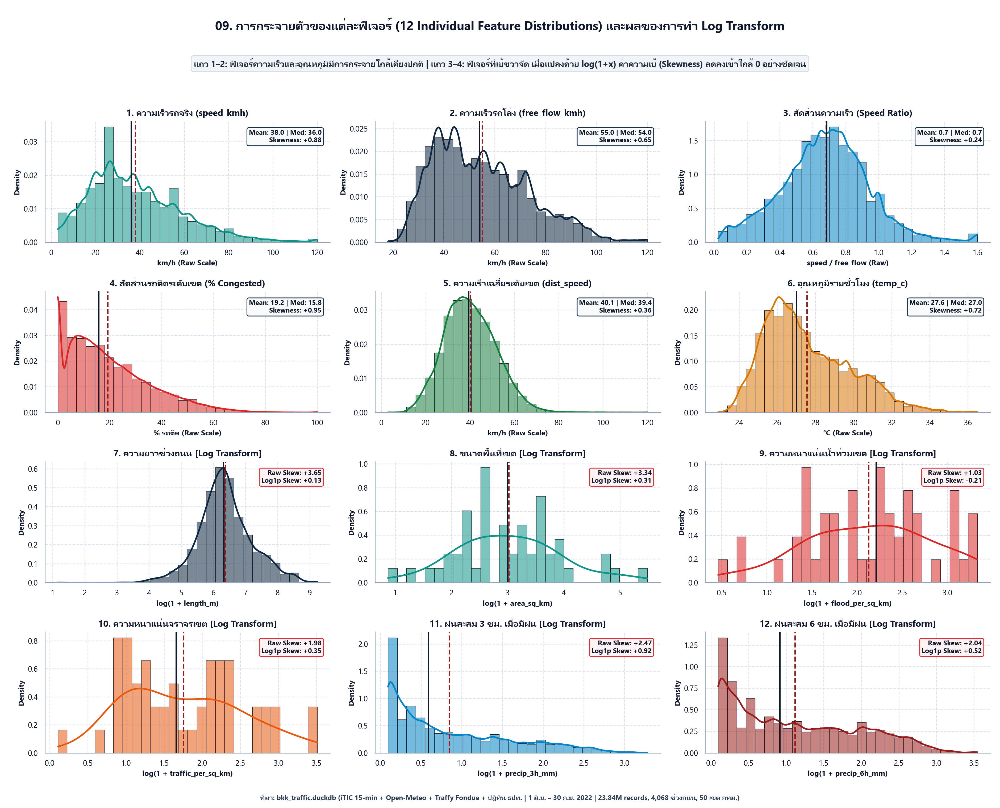
10. ปัจจัยน้ำท่วม (Regplot r = +0.67) & Area Denominator Bias
💡 Key Insight: ปัญหาโครงสร้างถนน (traffy_road) สัมพันธ์กับน้ำท่วมสูงสุด (r = +0.67) และกราฟ B ชี้ให้เห็น Area Denominator Bias ที่ทำให้ลาดกระบัง (831 เรื่อง) และบางขุนเทียน (645 เรื่อง) ถูกจัดเป็น Low Risk เพราะพื้นที่เขตใหญ่เกิน 120 km²
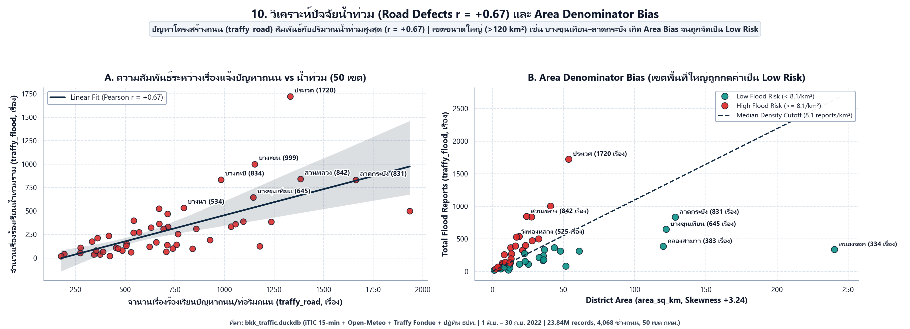
11. คุณภาพข้อมูล Outliers และ Distribution Shift (Train vs Valid vs Test)
💡 Key Insight: ชุดข้อมูล Test (ก.ย.) มีชั่วโมงฝนตกพุ่งสูงถึง 13.3% (เพิ่มขึ้น +75% จากชุด Train ที่ 7.6%) ยืนยันว่าเกิด Covariate Shift ตามฤดูกาลที่ต้องใช้ฟีเจอร์ฝนและน้ำท่วมช่วยในการพยากรณ์
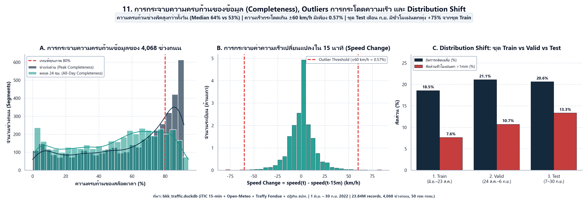
12. 6 กลไกต้นตอหลักที่ทำให้รถติดในกรุงเทพฯ (Root-Cause Drivers)
💡 Key Insight: สรุป 6 สาเหตุเชิงโครงสร้างและพฤติกรรมที่ขับเคลื่อนรถติด กทม.: น้ำรอระบายหลังฝนหยุด (ช้าสุด 35.1 km/h), แถวคอยล้นย้อนแยก (+79% Onset), แยกถี่ <500 ม. (2.3x), กฎพาเรโต Top 20% = 48.9% ของเหตุรถติดทั้งเมือง, วันก่อนหยุดยาว (45.3%), และ Perfect Storm ซ้อนทับ (44.8%)
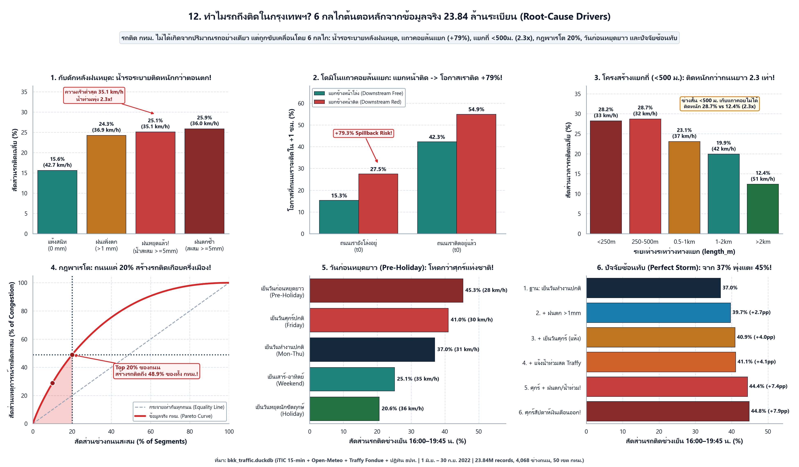